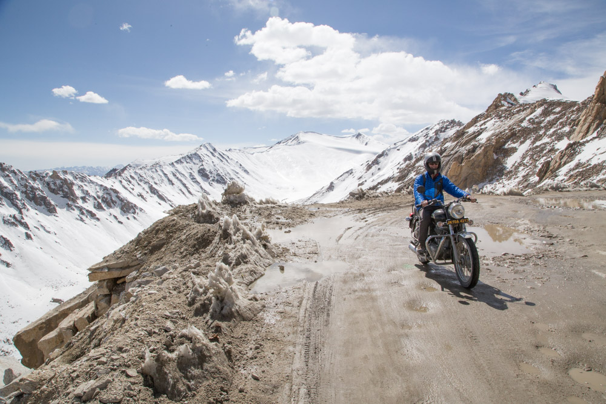
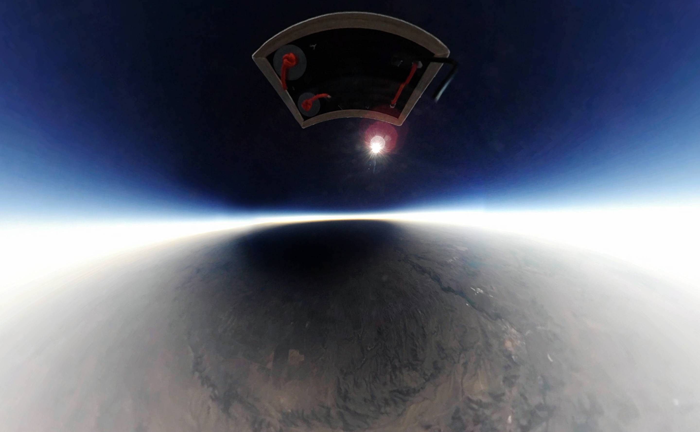

The blue tang is one of the most popular fish in the marine aquarium trade. However, it cannot be easily bred in captivity. This creates a global supply chain that connects fishermen in small islands with hobby aquarists on the other
side of the world.
Alongside four additional team members I worked in Indonesia, the Philippines, and Colorado to trace the path of this supply chain. I also developed the technology for the project, creating a web experience to tell a map-driven multimedia story, capturing underwater virtual reality video, and drone support.
This project was recognized as one of Mapbox's featured community maps of 2018

the ice cream expedition
People across the country explore their environments every day, but their stories are rarely heard. I created the Ice Cream Expedition, to start a conversation with kids (and adults) about where they love to explore, and how they can protect these places.
Team members and I drove an ice cream truck more than 8,600 miles across the country serving more than 13,000 free scoops of exotic ice cream flavors. Along the way, we collected 1,300 handwritten pledges from people across the country describing what they loved about their favorite natural areas, and how they could help protect them.
As the team lead, I raised over $20,000 in funding for the expedition as well as multiple sponsors, retrofitted a delivery van to convert it into an ice cream truck, and coordinated with PR agencies from National Geographic Kids and Magnolia Ice Cream to create 19 events across the country.
Team members and I drove an ice cream truck more than 8,600 miles across the country serving more than 13,000 free scoops of exotic ice cream flavors. Along the way, we collected 1,300 handwritten pledges from people across the country describing what they loved about their favorite natural areas, and how they could help protect them.
As the team lead, I raised over $20,000 in funding for the expedition as well as multiple sponsors, retrofitted a delivery van to convert it into an ice cream truck, and coordinated with PR agencies from National Geographic Kids and Magnolia Ice Cream to create 19 events across the country.

the highest road
Reaching above 18,000' deep in the Indian Himalayas lies the highest road in the world. Every winter this road is destroyed by avalanches, rockslides, and flooding. Every spring workers come to the Jammu-Kashmir region from throughout India to rebuild the road.
This project was led by Cameron Kruse. I was responsible for developing the technology to capture spherical videos and photos for viewing in virtual reality.
The work was showcased at the Teluride Mountainfilm Festival as well as Hemispheres, the United Airlines in-flight magazine. The expedition was also sponsored by MSR and Goal Zero.
This project was led by Cameron Kruse. I was responsible for developing the technology to capture spherical videos and photos for viewing in virtual reality.
The work was showcased at the Teluride Mountainfilm Festival as well as Hemispheres, the United Airlines in-flight magazine. The expedition was also sponsored by MSR and Goal Zero.

solar eclipse from the stratosphere
Working with Shepherd Kruse, we launched a balloon 85,000 feet into the stratosphere to observe the 2017 solar eclipse. From this vantage, we watched the shadow of the moon trace the path of totality over the earth.
We launched two balloons, one in Wyoming, and the other in Oregon. Each balloon was equipped with a custom-built radio tracking system and a downlink to stream images live from the balloon.
In addition to capturing traditional photos and video, one balloon also carried a camera for capturing spherical video. From this, we produced a VR video that enables a viewer to feel as if they were carried by the balloon.
We launched two balloons, one in Wyoming, and the other in Oregon. Each balloon was equipped with a custom-built radio tracking system and a downlink to stream images live from the balloon.
In addition to capturing traditional photos and video, one balloon also carried a camera for capturing spherical video. From this, we produced a VR video that enables a viewer to feel as if they were carried by the balloon.